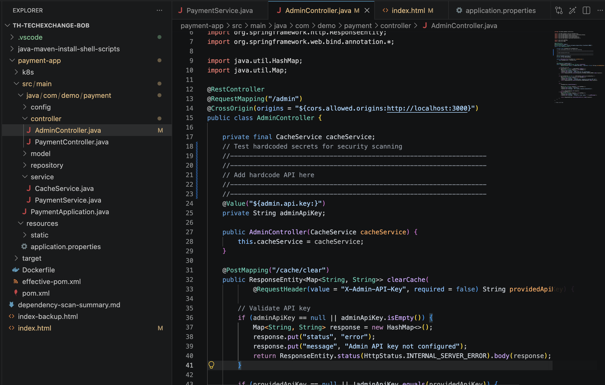
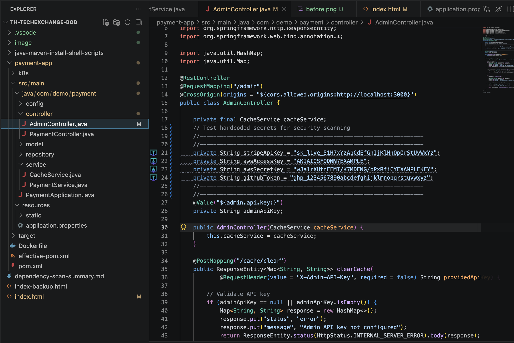

Quick Security Check with Bob Findings
Use Bob's built-in security scanning to identify vulnerabilities in your codebase, including leaked API keys and credentials. Learn how to use Bob Findings to detect and remediate security issues efficiently.
This walkthrough demonstrates Bob's capabilities for security scanning and dependency analysis using the payment-app sample application. You'll learn how to identify security vulnerabilities, handle leaked API keys, analyze dependency reports from IBM Concert, and systematically fix critical security issues.
Use Bob's built-in security scanning to identify vulnerabilities in your codebase, including leaked API keys and credentials. Learn how to use Bob Findings to detect and remediate security issues efficiently.
Analyze IBM Concert dependency scan reports to identify critical vulnerabilities in your application's dependencies. Use Bob to create remediation plans and execute fixes systematically.
Download the repository bundle that contains the payment-app codebase, the Java/Maven setup scripts, and the IBM Concert dependency scan report.
This package includes the application source, installation helper scripts, and the dependency-scan-summary.md report from IBM Concert.
payment-app/dependency-scan-summary.mdjava-maven-install-shell-scripts/payment-appTo use IBM Bob, you'll need an IBM ID and access to the Bob trial. Follow these steps to get started.
Create your IBM ID to access IBM products and services, including Bob.
Sign up for IBM Bob trial to access the AI-powered development assistant and security scanning features.
You must complete both registrations before proceeding with the lab exercises. The Bob trial provides access to all features needed for this security and dependency analysis walkthrough.
Before starting the lab, make sure your workstation has Java, Maven, and Bob IDE ready. The included shell and batch scripts simplify the installation and user-level environment setup.
java-maven-install-shell-scripts/chmod +x setup-java-maven-user.sh./setup-java-maven-user.shjava-maven-install-shell-scripts\setup-java-maven-user.batThe setup scripts will install Java 17 and Maven 3.9+ in your user directory without requiring administrator privileges. After installation, restart your terminal or IDE to ensure the environment variables are loaded.
Complete these hands-on exercises to learn how Bob can help you identify and fix security vulnerabilities and dependency issues in your applications.
In this exercise, you'll use Bob's built-in security scanning capabilities to identify leaked API keys and credentials in the payment-app codebase. Bob Findings provides real-time security analysis and helps you remediate issues quickly.
To test Bob's security finding capabilities, you'll first need to add hardcoded API keys to the codebase. Follow the instructions below to introduce test vulnerabilities.
Before testing Bob's security scanning, add hardcoded API keys to AdminController.java to simulate a real security vulnerability.
Add the following hardcoded API keys as private fields in AdminController.java after line 17 (after the cacheService declaration):
Location: Insert these lines in payment-app/src/main/java/com/demo/payment/controller/AdminController.java after line 17, before the @Value annotation.


Visual guide: AdminController.java before and after adding hardcoded API keys for testing
Remember to remove these test secrets after completing the lab! These are realistic API key patterns used for testing Bob's detection capabilities. Never commit real credentials to version control.
Use Bob's AI capabilities to remediate the security issue. You can either:
After Bob applies the fix, verify that:
AdminController.java@Value annotations to inject credentialsapplication.properties or .env file is created with placeholder valuesAlways store sensitive credentials in environment variables or secure vaults (like HashiCorp Vault, AWS Secrets Manager, or Azure Key Vault). Never commit credentials to version control.
Since the credentials were exposed in the codebase, you should:
In this exercise, you'll work with an IBM Concert dependency scan report to identify and fix critical vulnerabilities in the payment-app's dependencies. The report (dependency-scan-summary.md) contains detailed information about vulnerable dependencies, CVEs, and remediation steps.
The dependency scan has identified 2 CRITICAL vulnerabilities with active exploits: SnakeYAML 1.30 (CVE-2022-1471, CVSS 9.8) and H2 Database 2.1.214 (CVE-2022-45868, CVSS 7.5). Immediate action required.
First, let Bob analyze the IBM Concert report and provide a brief summary of the key findings.
Bob should identify the critical SnakeYAML and H2 Database vulnerabilities, the hardcoded credentials in PaymentService.java, and provide an overview of the security posture (Overall Health Score: 38/100).
Now ask Bob to create a detailed, step-by-step plan to fix the critical vulnerabilities identified in the report.
Bob should create a prioritized plan that includes removing the version overrides for SnakeYAML and H2 from pom.xml, removing hardcoded credentials, and providing validation steps.
Now let Bob execute the remediation plan step by step. Bob will modify the necessary files and verify the changes.
After Bob completes the fixes, verify that the vulnerabilities are resolved.
After completing this exercise, you should have:
Finally, ask Bob to create documentation of the security fixes applied.
Continuous Security Monitoring:
Best Practices: